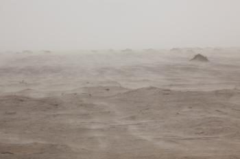
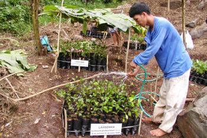
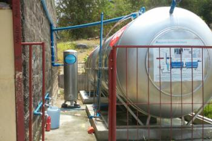

Combating Desertification
Combating Desertification Project is to fundamentally prevent cause of the increasingly serious yellow dust blowing from China to Korea, by preserving desertification of grassland in the China's Inner Mongolia region.
Challenge & Goal
Preventation of 1.4 tons of yellow dust every year
China's Inner Mongolia grassland region has shortages of annual precipitation(200~250mm/yr) for spontaneous growh of tree. Therefore, Ecopeace Asia has selected 'Suaeda glauca (Bunge)', the local wild plants to make it cover the desertificated land to prevent desertification and yellow dust, as it is able to hold 2.65g of air elutoriator by only its area of 1㎠. Also it does not require water a lot making maintenance work easier.
Agroforestry
Agroforestry Projects aim to improve the Philippines low-income farmer's planting capacity by introducing agroforestry into their farms, so they could address and overcome their community problems, such as extreme poverty, biodiversity crisis and climate changes that mainly comes from their slash&burn activities.
Challenge & Goal
Farming capacity building activities focused on local needs
For successful results, it is important that local farmers spontanerously participate in the projects, overcome poverty and secure their environment. Ecopeace Asia are priorly organizing farmer's self-government committee for model farm, community tree nursery, local forests and ultimately, the successful and sustainable case of agroforestry project. By 2017, after monitoring and consultimng process, Ecopeace Asia will screen and foster local leaders who manage and operate community model farm and tree nurseries.
Environmental Appropriate Technology
The demonstration project for drinking water provision and localization program by Korean appropriate technology of Rain Water Harvesting(RWH) is to relief environmental damage targeting on the Philippines damaged area by typhoon Haiyan and near by poor area.
Challenge & Goal
Pilot test, seminar, water quality analysis for local recognition on using rain water
There are many difficulties in persuading local in developing countries where the people are not familiar with using rain water as drinking water. For that reason, we installed 1 ton of pilot rain water harvesting system in a local house and let them manage and operate it voluntarily with regular seminar on rainwater and quality inspection. Finally, our efforts resulted in local recognition improvement telling that rain water is clean and safe.